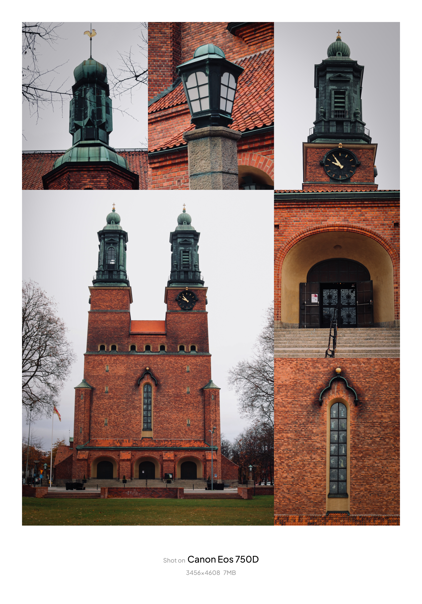

Min hobby: Fotografering
Jag tycker om att fotografera olika miljöer, människor och speciella ögonblick. Efteråt brukar jag redigera bilderna och videorna för att förbättra färger, ljus och uttryck.
Nedan visar jag några exempel på mitt arbete:



Faktatabell om min hobby
| Motiv | Plats | Kamera | Svårighetsgrad |
|---|---|---|---|
| Solnedgång | stranden | Mobil | Lätt |
| Natur | Parken | Kamera | medel |
| Byggnader | Ute | Kamera | Medel |
Om du vill läsa mer om fotografering, klicka på länken: Wikipedia